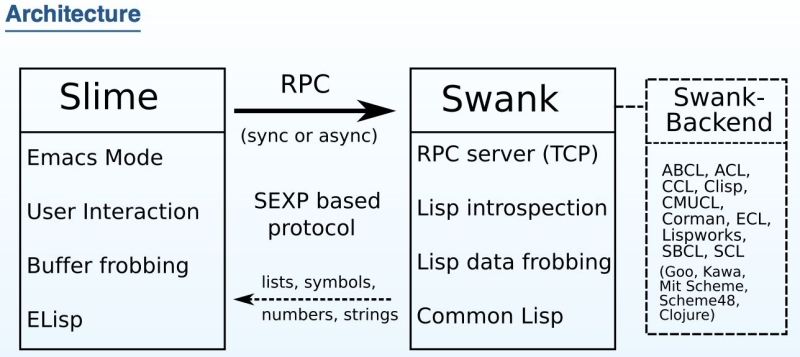

처음
리스프를 배우기 위해서, 어색하고 손가락이 아픈 Emacs를 굳이 고집할 필요는 없습니다.
Emacs에 비해 한참 어리지만 모던한, VSCode나 IntelliJ, Visual Studio와 같은 다른 에디터/IDE를 사용해도 됩니다.
그래도 기왕 여기까지 온 김에 한번 살펴보는 것도 좋을 것 같습니다.
Emacs는 리스프를 내장한 에디터이므로, 리스프를 배우면서 자신이 쓰는 에디터 역시 내 입맛에 맞게 고칠 수 있습니다.

- 광기어린듯한 하지만 엄청난 프로그래밍 실력으로 GNU이맥스를 작성한 리처드 스톨먼 아저씨.
- 지금은 사그라들었지만, 한때 종교전쟁이라 불릴만한 에디터 Emacs vs Vim 대결 역사도 한번 들여다 볼만합니다.
다음 라이브 코딩 영상을 감상해보시면서 Emacs의 매력에 빠져보세요.
- 아래 영상에서
박성민님은Emacs를 이용하여Common Lisp를 다루고 있습니다.
둘러보기
도움받기
- 커뮤니티 도움받기
- https://emacsdocs.org/
- https://www.gnu.org/software/emacs/manual/
- https://www.emacswiki.org/
- chatgpt
간단한 역사
| 년도 | Editor | from | |
|---|---|---|---|
| 1962 | TECO | Dan Murphy | |
| 1965 | QED | Butler Lampson, L. Peter Deutsch | |
| 1988 | VIM | Bram Moolenaar | vi |
| 1969 | ed | Ken Thompson | QED |
| 1970s | E | Fred Wright, Stanford AI Lab | |
| 1970s | MAC/MACS | Stanford AI Lab | TECO, E |
| 1970s | EMACS | Stanford AI Lab | MAC/MACS |
| 1976 | VI | Bill Joy | ed |
| 1981 | Gosling Emacs | James Gosling, 상용, Mocklisp | EMACS |
| 1985 | GNU Emacs | Richard Stallman, GPL, elisp | EMACS |
- 1970년데, MIT AI Lab에서는
ed처럼 명령 / 편집 / 보기 모드를 지원하는TECO(Tape Editor and COrrector)를 주로 쓰었다. - Stanford AI Lab에서는
E를 쓰고 있었는데, 1976년Richard Stallman는 그것을 보고 영감을 받아, MIT로 돌아와Control-R로 편집/보기 모드를 합쳐버린다. E에서 random-access editing 이 가능한 기능을TECO을 수정, 유명해졌고, 이는 곧MAC / MACS(macro)로 불리게 되었다.Guy Steele과 함께,Richard Stallman는 여러가지 보안 후EMACS(Editing MACroS / E with MACroS)를 만들었다.- 여러가지 변종이 나타나고, 기존
TECO macro대신lisp를 매크로로 쓰기 시작하였다. James Gosling은 unix에서 돌아가는Gosling Emacs를 만들었고,Richard Stallman은 자유소프트웨어 GNU Emacs를 만들었다.
Ref
Emacs 설치
emacs 컴파일 옵션이 여러가지가 있으며, 아래 명령어를 통해 확인할 수 있습니다.
- 설치
- 폰트
# ref: https://emacs.stackexchange.com/a/35512
# 설치된 emacs의 컴파일 옵션 확인
emacs --no-window-system --no-init-file --batch --eval "(message system-configuration-options)"
Windows
# scoop 설치
Set-ExecutionPolicy -ExecutionPolicy RemoteSigned -Scope CurrentUser
Invoke-RestMethod -Uri https://get.scoop.sh | Invoke-Expression
## git과 emacs 설치
scoop bucket add extras
scoop install emacs
scoop bucket add main
scoop install git
# 윈도우10에서는 BSD Tar가 설치되어 있음. 하지만 필요한건 GNU Tar
scoop bucket add main
scoop install tar
# 기타 유틸들
scoop bucket add main
scoop install ripgrep
scoop install direnv
scoop install fzf
scoop install global
scoop install openssh
scoop install gow
scoop install fd
scoop install gpg
- 기타
- 간혹 운영체제 호환성 문제로 인해 윈도우에서 WSL을 이용하여 우분투를 사용하는 경우가 있습니다.
Linux
sudo apt update
# 기본적으로 git은 설치하자
sudo apt-get install -y git
스냅 설정
sudo apt install -y snapd
sudo snap install -y emacs --classic
# 삭제시
# sudo snap remove
| 모드 | 설명 |
|---|---|
| --classic | classic confinement for full system access |
| --dangerous | dangerous mode for testing local unsigned snaps |
| --devmode | developer mode for testing and viewing log output |
| --jailmode | forces a snap to be installed with strict confinement |
| 채널 | 설명 |
|---|---|
| --beta | for users wanting to test the latest features, typically outside of a production environment. |
| --edge | for users wanting to closely track development. |
한글 설정
# /etc/default/locale
# /etc/environment
# /etc/profile
# 언어팩 설치
sudo apt-get install -y language-pack-ko
sudo apt-get install -y language-pack-ko-base
sudo apt-get install -y localepurge
sudo echo "ko_KR.EUC-KR EUC-KR" >> /var/lib/locales/supported.d/ko
sudo locale-gen --purge
sudo dpkg-reconfigure locales
sudo echo 'LANG="ko_KR.UTF-8"' >> /etc/environment
sudo echo 'LANG="ko_KR.UTF-8"' >> /etc/profile
# 고정폭 폰트 설치
sudo apt-get install -y fonts-naver-d2coding
| /usr/share/fonts/ | fonts for all users |
| ~/.local/share/fonts/ | fonts for particular user |
# fc-cache : 폰트 빌드
fc-cache --force --verbose
# fc-list : 폰트 목록 확인
fc-list
# fc-query : 폰트 정보 확인
# download: https://raw.githubusercontent.com/kelvinks/D2Coding_Nerd/master/D2Coding%20v.1.3.2%20Nerd%20Font%20Complete.ttf
fc-query ./D2Coding%20v.1.3.2%20Nerd%20Font%20Complete.ttf | grep family
macOs
- brew
- https://formulae.brew.sh/formula/emacs
brew install emacs
- https://formulae.brew.sh/cask/emacs
- https://emacsformacosx.com/
brew install --cask emacs
- https://emacsformacosx.com/
- https://formulae.brew.sh/formula/emacs
# homebrew 설치
/bin/bash -c "$(curl -fsSL https://raw.githubusercontent.com/Homebrew/install/HEAD/install.sh)"
# git 설치
brew install git
# gnu-tar 설치
brew install gnu-tar
# font 설치
brew tap homebrew/cask-fonts
brew install font-d2coding-nerd-font
# 기타 유틸들
brew install ripgrep
# emacs 설치
brew install --cask emacs
좀 더 옵션을 자유롭게 넣고 싶다
- https://github.com/d12frosted/homebrew-emacs-plus
--with-native-comp옵션이 있는 homebrew-emacs-plus로 선택
# emacs 설치
brew tap d12frosted/emacs-plus
# for Just-In-Time Compilation
# ref: https://gcc.gnu.org/wiki/JIT
brew install libgccjit
export CC=gcc
brew install emacs-plus@29 --with-native-comp
# Emacs.app was installed to:
# /opt/homebrew/opt/emacs-plus@29
#
# To link the application to default Homebrew App location:
# ln -s /opt/homebrew/opt/emacs-plus@29/Emacs.app /Applications
#
# Your PATH value was injected into Emacs.app/Contents/Info.plist
#
# Report any issues to http://github.com/d12frosted/homebrew-emacs-plus
#
# To start d12frosted/emacs-plus/emacs-plus@29 now and restart at login:
# brew services start d12frosted/emacs-plus/emacs-plus@29
# Or, if you don't want/need a background service you can just run:
# /opt/homebrew/opt/emacs-plus@29/bin/emacs --fg-daemon
ln -s /opt/homebrew/opt/emacs-plus@29/Emacs.app /Applications
macOs 락스크린 방지
Control-Command-Q: 화면 잠금 단축키가 할당되어 있다.- lisp-mode에선
C-M-q가indent-pp-sexp로 할당되어 있다.indent-pp-sexp: 괄호로 묶여 있는 모든 줄을 재정렬한다.
- 자주 쓰는 기능인데 단축키가 겹쳐 화면 잠금 단축키를 덮어 씌우는 편이 좋다.
> 하단에보면 > 화면 잠금이 있는데 이걸 다른키로 맵핑 시킬 것이다. > 시스템 설정 > 키보드 > 키보드 단축키... > 앱 단축키 > 모든 응용 프로그램 > +메뉴 제목에화면 잠금을 입력한다. ( 눌러서 이름/띄어쓰기가 동일한지 확인)- 원하는 단축키를 입력한다.
Ref
버전
| 버전 | 날짜 | 주목할만 변경사항 |
|---|---|---|
| 30.1 | - | |
| 추가: use-package - :vc 키워드 지원 | ||
| 29.1 | 2023-07-30 | |
| 추가: Tree-sitter | ||
| 추가: EGlot | ||
| 추가: use-package | ||
| 추가: package-vc-install | ||
| 추가: restart-emacs | ||
| 옵션: --init-directory | ||
| 삭제: linum-mode (elisp로 작성된거라 느림) | ||
| 28.1 | 2022-04-04 | |
| 추가: use-short-answers | ||
| 27.1 | 2020-08-10 | |
| 기본 활성화: 렉시컬 바인딩 | ||
| 이름변경: cl => cl-lib | ||
| 추가: early-init.el | ||
| 추가: bidi-inhibit-bpa | ||
| 추가: fido-mode | ||
| 26.1 | 2018-05-28 | |
| 추가: display-line-numbers-mode / (속도향상위해 c언어로 작성됨) | ||
| 추가: read-answer-short | ||
| 24.5 | 2015-04-10 | |
| 24.4 | 2014-10-20 | |
| 삭제: iswitchb-mode | ||
| 추가: prettify-symbols-mode | ||
| 추가: icomplete-mode | ||
| 24.1 | 2012-06-10 | |
| 추가: package.el | ||
| 추가: electric-pair-mode | ||
| 추가: prog-mode | ||
| 22.1 | 2007-06-02 | |
| 추가: ibuffer | ||
| 추가: ido | ||
| 추가: iswitchb-mode | ||
| 21.1 | 2001-10-28 | |
| 추가: global-hl-line-mode |
emacs-mirror
- NEWS.29
- NEWS.28
- NEWS.27
- NEWS.26
- NEWS.25
- NEWS.24
- NEWS.23
- NEWS.22
- NEWS.21
- NEWS.20
- NEWS.19
- NEWS.18
- NEWS.1-17
masteringemacs
기본 조작법
Ctrl-G 중요합니다.
| 키 | 기호 |
|---|---|
| Ctrl | C- |
| Meta | M- |
| Super | S- |
| Hyper | H- |
| Enter | RET |
| Space | SPC |
| F1 | |
| 상하좌우 | |
| 마우스 |
| X (eXtend) command. | |
|---|---|
| C-x | Character eXtend. Followed by one character. |
| M-x | Named command eXtend. Followed by a long name. |
필수 조작법
| 필수 | 단축키 | |
|---|---|---|
| 중단 | C-g | |
| 파일 열기 | C-x C-f | find-file |
| 저장하기 | C-x C-s | save-buffer |
| 저장하기(다른이름) | C-x C-w | write-file |
| 종료 | C-x C-c | save-buffers-kill-terminal |
| 명령어 실행 | M-x 명령어 |
이동
| C-이동 | 단축키 | |
|---|---|---|
| 문자 앞(forward) | C-f | forward-char |
| 문자 뒤(back) | C-b | backward-char |
| 라인 위(previous-line) | C-p | previous-line |
| 라인 아래(next-line) | C-n | next-line |
| 라인 앞 | C-a | beginning-of-line |
| 라인 뒤 | C-e | end-of-line |
| M-이동 | 단축키 | |
|---|---|---|
| 단어 앞(forward) | M-f | forward-word |
| 단어 뒤(back) | M-b | backward-word |
| 문단 앞 | M-a | backward-sentence |
| 문단 뒤 | M-e | forward-sentence |
| 라인으로 이동 | M-g M-g 라인 |

튜토리얼 시작
위에 필수과 이동을 잘 숙지 후, M-x help-with-tutorial-spec-language후 Korean을 입력하시면 한글로 튜토리얼을 볼 수 있습니다.
기타
삭제
| 이동 | 단축키 | 이동 | 단축키 |
|---|---|---|---|
| C-k | 현재 커서에서 라인 끝까지 삭제 | M-k | 버퍼 삭제 |
| 이전 문자 지우기 | <Del> | 이전 단어 지우기 | M-<Del> |
| 다음 문자 지우기 | C-d | 다음 단어 지우기 | M-d |
복사, 붙여넣기, 되돌리기
| 복사, 붙여넣기, 되돌리기 | 단축키 |
|---|---|
| 마크: 설정 | C-<SPC> |
| 마크: 전체 | C-x h |
마크: 복사 | M-w |
마크: 잘라내기 | C-w |
붙여넣기 | C-y |
되돌리기 | C-x u |
되돌리기 | C-/ |
확대축소
| 확대축소 | 단축키 | |
|---|---|---|
| 확대 | C-x C-- | |
| 축소 | C-x C-= | |
| 자동줄바꿈(껏다 켰다) | C-x x t | toggle-truncate-lines |
검색
| 검색 | 단축키 |
|---|---|
| 정방향 | C-s |
| 역방향 | C-r |
| 정방향(정규표현식) | C-M-s |
| 역방향(정규표현식) | C-M-r |
| 바꾸기 | M-% |
| 바꾸기(정규표현식) | C-M-% |
헬프
| 설명 | 단축키 | 함수 |
|---|---|---|
| 정보보기 | C-h i | info |
| 키 확인(간단히) | C-h c | describe-key-briefly |
| 키 확인(자세히) | C-h k | describe-key |
| 최근에 입력한 키 보기 | C-h l 혹은 | |
| 단축키 보기(모두) | C-h b | |
| 단축키 보기(C-x로 시작하는 것만) | C-x C-h 혹은 C-x | |
| 단축키 보기(사용자 정의) | C-c C-h 혹은 C-c |
C-h i m Elisp RET: GNU Emacs Lisp Reference ManualC-h i m Emacs Lisp Intro RET: An Introduction to Programming in Emacs Lisp
shell
- https://unix.stackexchange.com/a/180129
- M-x shell
- {grep, du, ls, sort, cat, head, tail, uname, ...}와 같은 클래식/표준 Unix 쉘 명령의 일반적인 사용에 적합합니다.
- M-x term ＆ M-x ansi-term
- ssh나 기타 명령줄 대화형 인터페이스(예: {python, ruby, lisp} 셸) 또는 {vim, synaptic, …}과 같은 텍스트 기반 GUI 앱을 실행하려는 경우에 좋습니다.
- M-x eshell
- eshell은 emacs lisp에 직접 액세스할 수 있기 때문에 bash가 설치되지 않은 Microsoft Windows에서 특히 좋습니다. 또는 emacs lisp 프로그래머라면 더욱 좋습니다.
- M-x shell
버퍼, 윈도우, 프레임, 탭
버퍼와 윈도우를 자주 사용합니다.
버퍼
| 버퍼 | 단축키 | |
|---|---|---|
| 목록 | C-x C-b | |
| 이동 | C-x b | |
| 삭제 | C-x k | |
| 읽기전용(토클) | C-x C-q | read-only-mode |
윈도우
| 윈도우 | 프레임 | 탭 | |
|---|---|---|---|
| 현재창 닫기 | C-x 0 | C-x 5 0 | C-x t 0 |
| 다른창 닫기 | C-x 1 | C-x 5 1 | C-x t 1 |
| 새로만들기 | C-x 2 | C-x 5 2 | C-x t 2 |
| 새로만들기(우측) | C-x 3 | ||
| 다음으로 이동 | C-x o | C-x 5 o | C-x t o |
| 파일 열기 | C-x C-f | C-x 5 C-f | C-x t C-f |
| 파일 열기(읽기전용) | C-x C-r | C-x 5 r | C-x t C-r |
모드
- 주(매이져, Major)모드와 보조(마이너, Minor)모드가 있습니다.
M-x describe-mode RET으로 확인 할 수 있습니다.
키고 끄기
모드를 키고 끄는건 +1 혹은 -1을 사용하도록 합니다.
(display-time-mode +1) ; 시간 켜기
(display-time-mode -1) ; 시간 끄기 (0포함 음수면 끄기)
예)
- elisp파일을 열고
M-x prettify-symbols-mode RET으로 한 다음, M-x describe-mode RET를 입력하면 매이저/마이너 모드를 확인 할 수 있습니다.- 매이저 ELisp/d는 elisp-mode.el 정의되어있고,
- 마이너 모드는 Auto-Save, Eldoc, Font-Lock, 그리고 아까 활성화시킨 Prettify-Symbols 가 활성되어있습니다.
;; emacs-lisp-mode는 lisp-data-mode를
;; lisp-data-mode는 prog-mode(programming mode)를
;; prog-mode는 fundamental-mode를 상속받고 있습니다.
;; emacs-lisp-mode
;; -|> lisp-data-mode
;; -|> prog-mode
;; -|> fundamental-mode
;; 그리고 lisp-data-mode는 다음 prettify-symbols-alist를 가지고 있다.
;; alist란 association list(연관리스트)의 약자로, (key . value)의 리스트이다.
(defconst lisp-prettify-symbols-alist '(("lambda" . ?λ))
"Alist of symbol/\"pretty\" characters to be displayed.")
;; prettify-symbols-mode를 활성시켰으므로
;; emacs-lisp-mode인 .el파일에서 lambda를 입력하면 λ로 바뀐다.
defun
C-x f hello.el로 초기화 파일을 열어봅시다.
| defun | 함수 정의 |
| interactive | 함수를 M-x로 실행할 수 있게 함 |
;; init.el --- Emacs configuration
;; `C-M-x` 평가하기
;; 다음 함수를 작성하여 함수를 평가하여 정의합니다.
(defun hello ()
(message "Hello World"))
;; 다음 폼(form)을 평가하면 하단에 "Hello World"가 출력됩니다.
(hello)
;; (interactive)를 추가하면, `M-x hello`로 함수를 실행할 수 있습니다.
(defun hello ()
(interactive)
(message "Hello World"))
참고
elisp
ielm
IELM(Interactive Emacs Lisp Mode)
M-x ielm RET
기타 유용한 함수
| 기능 | 단축키 | 함수 |
|---|---|---|
| 코드 평가 | M-: | eval-expression |
| 모드확인 | describe-mode | |
| 변수설명 | describe-variable | |
| 함수설명 | describe-function |
| .el 파일에서 | 단축키 | 함수 |
|---|---|---|
| form 평가 | C-M-x | eval-defun |
| 괄호로 묶여 있는 모든 줄을 재정렬 | C-M-q | indent-pp-sexp |
컴파일
| 확장자 | 설명 |
|---|---|
| .el | 텍스트 |
| .elc | 컴파일(바이트) |
| .eln | 컴파일(네이티브) |
기타
;; association list
;; push를 사용하게 되면 같은 키가 여러개 생긴다.
(defvar x-alist '((a . 1))) ; ((a . 1))
(push '(a . 1) x-alist) ; ((a . 1) (a . 1))
;; add-to-list를 사용하면 같은 키가 여러개 생기지 않는다.
(defvar x-alist '((a . 1))) ; ((a . 1))
(add-to-list 'x-alist '(a . 1)) ; ((a . 1))
(add-to-list 'x-alist '(a . 2)) ; ((a . 1) (a . 2)) ;; 의도하지 않은 결과가 나온다.
;; ref: https://stackoverflow.com/a/25100962
;; property list
(defvar x-plist '(:a 1 :b 2)) ; (:a 1 :b 2)
(plist-get x-plist :b) ; 2
;; 사전
;; ref: https://www.gnu.org/software/emacs/manual/html_node/elisp/Dictionaries.html
;; memq
> (memq 9 '(1 2 3))
nil
> (memq 2 '(1 2 3))
(2 3)
eq eql equal
set setq
defvar defconst
memq meml member
참고
- ElispCheatSheet
- https://tuhdo.github.io/emacs-for-proglang.html
- https://tuhdo.github.io/helm-intro.html
모드
| 의미 | |
|---|---|
| -- | 일반 |
| ** | 버퍼 수정됨 |
| %% | 읽기모드, 일반 |
| %* | 읽기모드, 버퍼 수정됨 |
Major 모드 구조
--- title: Major 모드 조감도 --- classDiagram fundamental-mode <|-- comint-mode comint-mode <|-- inferior-emacs-lisp-mode note for inferior-emacs-lisp-mode "버퍼: *ielm*" fundamental-mode <|-- prog-mode prog-mode <|-- lisp-data-mode lisp-data-mode <|-- lisp-mode lisp-data-mode <|-- emacs-lisp-mode emacs-lisp-mode<| -- lisp-interaction-mode note for lisp-interaction-mode "버퍼: *scratch*" prog-mode <|-- clojure-ts-mode prog-mode <|-- racket-mode
emacs.d/
-
이곳에서 미리 설정한
.emacs.d/템플릿을 받을 수 있습니다. -
Emacs가 시작될 때, 초기화 파일을 로드합니다.
early-init.el로드 (Emacs 27.1 이상)- Emacs GUI 로드
init.el로드
| 파일명 | |
|---|---|
| ~/.emacs.el | 안쓰는게 좋음. |
| ~/.emacs | 안쓰는게 좋음. |
| ~/.emacs.d/init.el | Windows, macOs에 추천 |
| ~/.config/emacs/init.el | Linux에 추천 |
- 변수
user-emacs-directory는 초기화 파일이 있는 폴더 명시합니다.- ex) "~/.emacs.d/"
Emacs는 다음과 같은 시작 옵션을 제공합니다.
| emacs 옵션 | 설명 |
|---|---|
| --no-init-file / -q | 기본 초기화 파일을 로드하지 않음 |
| --debug-init | 초기화 파일에 디버거를 활성화 시킴 |
| --load 파일위치 / -l 파일위치 | 특정 파일을 로드함 |
| --no-window-system / -nw | GUI를 사용하지 않음 |
| --init-directory=폴더 | init 폴더를 지정한 곳으로 설정가능 |
| --quick / -Q | "-q --no-site-file --no-splash" |
# init폴더 영향 없이 다른 위치에 있는 elisp만 로드
emacs --no-init-file --load ~/other/init.el
# 다른 위치에 있는 init 폴더로 초기화 하며 이맥스를 켜고 싶다면.
# --init-directory 옵션은 29.1 버전부터 지원
emacs --init-directory=~/other_init_dir
.emacs.d/init.el을 시작위치로,.emacs.d/폴더를 github등을 이용해 버전관리해주면 좋습니다..org파일로.el를 생성할 수 있는 점을 이용. 문서화와 코드를 동시에 관리하는 방법도 있습니다.- 다만, 설정파일을 org로 다루는 것은 호불호가 갈리고, 무엇보다도 org를 다루기에는 너무나 방대합니다.
- 따라서, 여기서 Org는 다루지 않겠습니다.
참고
.gitignore
# -*- mode: gitignore; -*-
## here: https://github.com/lispkorea/template-emacs.d/blob/main/.gitignore
## ref: https://github.com/github/gitignore/blob/main/Global/Emacs.gitignore
# 이맥스 ============================================================
## 임시파일
*~
## 락(lock)파일
#*
## 컴파일(네이티브)
/eln-cache/
.eln
## 컴파일(바이트)
.elc
## 캐쉬
/\.cache/
## 기타
/eln-cache/
# 자동저장 파일
auto-save-list
## 디렉토리 설정
.dir-locals.el
## 데스크탑
/.emacs.desktop
/.emacs.desktop.lock
## 커스텀파일
/custom.el
## reftex files
*.rel
## AUCTeX auto folder
/auto/
## server auth directory
/server/
## network security
/network-security.data
# 라이브러리 ============================================================
## 라이브러리 - package
/elpa/
## 라이브러리 - eshell
/eshell/
## 라이브러리 - projectile
/projectile-bookmarks.eld
/projectile.cache
/projects
## 라이브러리 - ido
/ido.last
## 라이브러리 - elisp-autofmt
/elisp-autofmt-cache/
## 라이브러리 - flycheck
flycheck_*.el
## 라이브러리 - flymake-mode
*_flymake.*
## 라이브러리 - lang-racket
/racket-mode/
## 라이브러리 - ido
/ido.last
## 라이브러리 - tramp
tramp
## 라이브러리 - org
.org-id-locations
*_archive
## 라이브러리 - amx
/amx-items
## 라이브러리 - multiple-cursors
/.mc-lists.el
## 라이브러리 - magit
/transient/
# 기타 ============================================================
## 임시파일(MacOs)
.DS_Store
## cask packages
.cask/
dist/
early-init.el
~/.emacs.d/early-init.el은 다음과 같은 일을 할 것입니다.- GUI 로드되기 전 설정
| gc-cons-threshold | GC가 발생되는 바이트 수 설정 |
| gc-cons-percentage | gc-cons-threshold를 바탕으로 percentage가 초과되면 GC가 발생 - 기본값 0.1. 즉 10% |
GUI가 로드되기 전에 설정됨으로, menu-bar, tool-bar와 같이 안쓰는 것이 있다면, 이 단계에서 제거해주는 것이 좋습니다.
(setq gc-cons-threshold most-positive-fixnum)
(setq gc-cons-percentage 0.6)
(add-hook 'emacs-startup-hook
(lambda ()
(setq gc-cons-threshold (* 16 1024 1024)))
(setq gc-cons-percentage 0.1))
(push '(menu-bar-lines . 0) default-frame-alist)
(push '(tool-bar-lines . 0) default-frame-alist)
(push '(vertical-scroll-bars) default-frame-alist)
init.el
~/.emacs.d/init.el에는 다음과 같은 일을 할 것입니다.- 초기 파일/폴더 관련 설정
package.el와use-package를 이용해 패키지를 받을 저장소를 지정합니다.
초기 파일/폴더 관련 설정
| elisp | 설명 |
|---|---|
| custom-file | 설정파일 경로 |
| user-emacs-directory | 초기화 파일이 있는 폴더 |
| locate-user-emacs-file | user-emacs-directory기준 새로운 경로 반환 |
| load | 파일을 로드합니다. |
| make-backup-files | 백업파일을 만듭니다. |
| create-lockfiles | lock파일을 만듭니다. |
~.emacs.d/custom.el과 같이 하드코딩하는 것은 좋지 않습니다(--init-directory 옵션을 사용할 경우를 대비).- locate-user-emacs-file 함수를 이용하면
user-emacs-directory기준으로 경로를 반환합니다.
(progn ;; `initial-file&directory'
;; ref: https://www.gnu.org/software/emacs/manual/html_node/emacs/Saving-Customizations.html
(setq custom-file (locate-user-emacs-file "custom.el"))
(load custom-file 'noerror)
;; lock 파일 .#파일명
;; ref: https://www.gnu.org/software/emacs/manual/html_node/emacs/Backup.html
(setq make-backup-files nil)
;; backup 파일 파일명~
;; ref: https://www.gnu.org/software/emacs/manual/html_node/elisp/File-Locks.html
(setq create-lockfiles nil)
;; ref: https://www.gnu.org/software/emacs/manual/html_node/emacs/Auto-Save-Control.html
(setq auto-save-default nil))
package
- Package Manager 참고
- package.el: Emacs 24.1(2012-06-10)
- use-package: Emacs 29.1(2023-07-30)
- Package Archive
- elpa(
EmacsLispPackageArchive) - melpa(
MilkypostmanEmacsLispPackageArchive)
- elpa(
- 미러
(use-package package
;;
;; ref: https://github.com/emacs-mirror/emacs/blob/master/lisp/emacs-lisp/package.el
;; ref: https://www.gnu.org/software/emacs/manual/html_node/emacs/Packages.html
;;
;; elpa(`E`macs `L`isp `P`ackage `A`rchive)
;; melpa(`M`ilkypostman `E`macs `L`isp `P`ackage `A`rchive)
;;
;; elpa(gnu): https://elpa.gnu.org/
;; elpa(nognu): https://elpa.nongnu.org/
;; melpa: http://melpa.org/
;; melpa(stable): http://stable.melpa.org/
;; 미러 칸트대학: https://www.mirrorservice.org/
;; 미러 칭화대학: https://mirrors.tuna.tsinghua.edu.cn/help/elpa/
:config
(progn ;; `elpa'
(defconst PACKAGE_ELPA_GNU
'("gnu" . "https://elpa.gnu.org/packages/"))
(defconst PACKAGE_ELPA_NOGNU
'("nongnu" . "https://elpa.nongnu.org/nongnu/")))
(progn ;; `melpa'
(defconst PACKAGE_MELPA
'("melpa" . "http://melpa.org/packages/"))
(defconst PACKAGE_MELPA_STABLE
'("melpa-stable" . "http://stable.melpa.org/packages/")))
(progn ;; `mirrorservice'
(defconst PACKAGE_MIRRORSERVICE_MELPA
'("melpa" . "http://www.mirrorservice.org/sites/melpa.org/packages/"))
(defconst PACKAGE_MIRRORSERVICE_MELPA_STABLE
'("melpa-stable" . "http://www.mirrorservice.org/sites/stable.melpa.org/packages/")))
(progn ;; `tsinghua'
(defconst PACKAGE_TSINGHUA_GNU
'("gnu" . "http://mirrors.tuna.tsinghua.edu.cn/elpa/gnu/"))
(defconst PACKAGE_TSINGHUA_NOGNU
'("nognu" . "http://mirrors.tuna.tsinghua.edu.cn/elpa/nongnu/"))
(defconst PACKAGE_TSINGHUA_MELPA
'("melpa-cn" . "http://mirrors.tuna.tsinghua.edu.cn/elpa/melpa/"))
(defconst PACKAGE_TSINGHUA_MELPA_STABLE
'("melpa-stable-cn" . "http://mirrors.tuna.tsinghua.edu.cn/elpa/stable-melpa/")))
;;(setq-default package-user-dir DIR_ROOT_PACKAGE)
(setq package-archives
(list
PACKAGE_ELPA_GNU
PACKAGE_ELPA_NOGNU
PACKAGE_MELPA
)))
config-loader
(progn ;; `설정'
(thread-last
"config-loader.el"
(locate-user-emacs-file)
(file-truename)
(load-file))
(defconst CONFIG_DIR "config/")
(defconst CONFIG_LIST
'(
;;; =========== `base-'
base-define.el
base-setting.el
;;; =========== `os-'
os-windows.el
os-macos.el
os-linux.el
;;; =========== `setting-'
setting-theme.el
setting-ui.el
setting-navigation.el
setting-editting.el
setting-font.el
setting-treemacs.el
setting-projectile.el
;;; =========== `lang-' : language(programming)
lang-emacs-lisp.el
;; lang-common-lisp-sly.el
lang-common-lisp-slime.el
lang-clojure-cider.el
lang-racket-racket-mode.el
;;; =========== `file-' : file type
file-markdown.el
file-json.el
;;; =========== `util-'
util-git.el
util-flymake.el
util-quickrun.el
util-command.el
;; util-completion.el
))
(config-loader:load-config CONFIG_DIR CONFIG_LIST))
ref
config-loader.el
리스트에 나열된 설정파일들을 로드하고, 로드된 결과를 보여줍니다.
;; file: config-loader.el
(require 'cl-lib)
(require 'cl-seq)
(defalias '-> 'thread-first)
(defalias '->> 'thread-last)
(cl-defstruct ConfigInfo
index
file-path
file-fullpath
time-load-sec)
(defun getConfigInfos (config-dir config-list)
(cl-loop for file-path in config-list
for index from 0
for file-fullpath = (->> file-path
(symbol-name)
(concat config-dir)
(locate-user-emacs-file)
(file-truename))
when (file-exists-p file-fullpath)
collect
(let* ((time-load-sec (-> file-fullpath
(load-file)
(benchmark-run)
(car))))
(make-ConfigInfo :index (+ index 1)
:file-path file-path
:file-fullpath file-fullpath
:time-load-sec time-load-sec))))
(defun getIndicate (val-cur val-max)
(let* ((perc-1 (thread-first
val-cur
(/ val-max)
(* 10)
(round)))
(perc-2 (- 10 perc-1)))
(concat (make-string perc-1 ?■) (make-string perc-2 ?.))))
(defun config-loader:load-config (config-dir config-list)
(let* ((infos (getConfigInfos config-dir config-list))
(acc-sec (->> infos
(mapcar #'ConfigInfo-time-load-sec)
(apply '+ ))))
(let ((buff (get-buffer-create "== 설정 로드 결과 ==")))
(with-current-buffer buff
(view-mode -1)
(erase-buffer)
(insert (format "\n\n총 %d파일, %0.4f초\n\n" (length infos) acc-sec))
(dolist (info infos)
(insert (format "%03d | %s | %0.2f초 | %s\n"
(ConfigInfo-index info)
(getIndicate (ConfigInfo-time-load-sec info) acc-sec)
(ConfigInfo-time-load-sec info)
(ConfigInfo-file-path info))))
(switch-to-buffer buff)
(view-mode +1)))))
config/
| prefix | 설명 | 예 |
|---|---|---|
| base- | 기본 | base-define.el |
| os- | 운영체제 특화 | os-windows.el |
| setting- | 사용자설정 | setting-theme.el |
| lang- | 프로그래밍 언어 | lang-emacs-lisp.el |
| file- | 파일 타입별 | file-markdown.el |
| util- | 유틸리티 | util-git.el |
base-define.el
;; file: base-define.el
(defconst true t)
(defconst false nil)
(defconst IS_WINDOWS (eq system-type 'windows-nt))
(defconst IS_MAC (eq system-type 'darwin))
(defconst IS_LINUX (eq system-type 'gnu/linux))
(defconst MODE_ON +1)
(defconst MODE_OFF -1)
;; (defmacro -> (&rest body)
;; ;; thread-first
;; (let ((result (pop body)))
;; (dolist (form body result)
;; (setq result
;; (append (list (car form) result)
;; (cdr form))))))
;; (defmacro ->> (&rest body)
;; ;; thread-last
;; (let ((result (pop body)))
;; (dolist (form body result)
;; (setq result
;; (append form (list result))))))
(defmacro comment (&rest body)
nil)
(defalias 'count 'length)
(defalias 'first 'car)
(defalias 'rest 'cdr)
(defalias 'do 'progn)
(defalias 'provided? 'featurep)
(defalias '-> 'thread-first)
(defalias '->> 'thread-last)
(defun inc (n) (+ 1 n))
base-setting.el
설정
- 예전에는
file-name-coding-system,set-terminal-coding-system,set-keyboard-coding-system등등 했었은데 이제는set-default-coding-systems하나로 끝낸다. - 예전에는 (defalias 'yes-or-no-p 'y-or-n-p) 이런식으로 했었다
;; file: base-setting.el
(progn ;; `설정::한글'
;; ref: https://www.gnu.org/software/emacs/manual/html_node/emacs/Language-Environments.html
(set-language-environment "Korean"))
(progn ;; `설정::utf-8'
;; utf-8 설정
;; ref: https://www.masteringemacs.org/article/working-coding-systems-unicode-emacs
;; ref: https://www.gnu.org/software/emacs/manual/html_node/elisp/Default-Coding-Systems.html
(set-default-coding-systems 'utf-8)
(prefer-coding-system 'utf-8))
(progn ;; `설정::Y_혹은_N으로_대답'
(setq read-answer-short t)
(setq use-short-answers t))
(progn ;; `설정::인덴트'
(setq-default indent-tabs-mode nil)
(setq tab-width 4))
(use-package delsel
;; ref: https://github.com/emacs-mirror/emacs/blob/master/lisp/delsel.el
:ensure nil
:config
(delete-selection-mode +1))
(use-package whitespace
:ensure nil
:hook (before-save . whitespace-cleanup))
os-windows.el
;; file: os-windows.el
(when (eq system-type 'windows-nt)
)
os-macos.el
- https://www.gnu.org/software/emacs/manual/html_node/elisp/Window-Systems.html
- 맥의 커맨드키를 이맥스의 메타키로 사용하는게 편하다.
;; file: os-macos.el
(when (eq system-type 'darwin)
;; `설정::macOs'
;;
;; ns : NeXTSTEP. Darwin이전에 사용되던 OS
;; darwin: Darwin (kernel)로 macOs의 기반이되는 코어.
;; darwin/ns/mac 이라 치면 보통 macOs구나 라고 생각하면 편하다.
;; mac-function-modifier => alias ns-function-modifier
;;
;; ref: https://www.gnu.org/software/emacs/manual/html_node/emacs/Mac-_002f-GNUstep-Customization.html
;;
;; +-----+-------+-----+-----+-------------------+-----+-----+
;; | | | | | | | |
;; |Fn |Ctrl |Optn |Cmd | Space |Cmd |Optn |
;; +-----+-------+-----+-----+-------------------+-----+-----+
;; |hyper|control|super|meta | Space |Cmd |Optn |
;; +-----+-------+-----+-----+-------------------+-----+-----+
;;
;; ref: https://www.gnu.org/software/emacs/manual/html_node/emacs/Mac-_002f-GNUstep-Customization.html
(setq ns-function-modifier 'hyper)
(setq ns-control-modifier 'control)
(setq ns-option-modifier 'super)
(setq ns-command-modifier 'meta)
;; (global-set-key (kbd "S-x") 'kill-region)
;; (global-set-key (kbd "S-c") 'kill-ring-save)
;; (global-set-key (kbd "S-v") 'yank)
;; (global-set-key (kbd "S-a") 'mark-whole-buffer)
;; (global-set-key (kbd "S-s") 'save-buffer)
;; (global-set-key (kbd "S-z") 'undo)
;; (global-set-key (kbd "S-+") 'text-scale-adjust)
;; (global-set-key (kbd "S--") 'text-scale-adjust)
)
os-linux.el
;; file: os-linux.el
(when (eq system-type 'gnu/linux)
)
setting-ui
;; file: 1000_visual.el
(progn ;; `비쥬얼::시작화면'
;; ref: https://github.com/emacs-mirror/emacs/blob/master/lisp/startup.el
;; ref: https://www.gnu.org/software/emacs/manual/html_node/elisp/Startup-Summary.html
(setq inhibit-startup-screen t))
(progn ;; `비쥬얼::단순모드-On/Off'
;; 켜기: 양수 ; +1로 통일
;; 끄기: 0포함 음수; -1로 통일
(global-hl-line-mode +1)
(display-time-mode +1)
(tool-bar-mode -1)
(menu-bar-mode +1)
(scroll-bar-mode +1))
(progn ;; `all-the-icons'
;; ref: https://github.com/domtronn/all-the-icons.el
(use-package all-the-icons
:ensure t
:if (or (display-graphic-p)
(daemonp))
:config
;; ref: https://github.com/domtronn/all-the-icons.el/issues/120#issuecomment-565438080
(defun aorst/font-installed-p (font-name)
"Check if font with FONT-NAME is available."
(if (find-font (font-spec :name font-name))
t
nil))
(when (and (not (aorst/font-installed-p "all-the-icons"))
(window-system))
(all-the-icons-install-fonts t)))
(use-package all-the-icons-dired
:ensure t
:after (all-the-icons dired)
:hook (dired-mode . all-the-icons-dired-mode))
(use-package all-the-icons-ibuffer
:ensure t
:after (all-the-icons ibuffer)
:config
(all-the-icons-ibuffer-mode t)))
(use-package paren
;; parenthesis : 괄호만
;; expression : 표현식전체
;; mixed : 한 화면에 보이면 괄호, 아니면 표현식전체
:config
(setq show-paren-delay 0)
(setq show-paren-style 'expression)
;; (setq show-paren-style 'parenthesis)
;; (setq show-paren-style 'mixed)
(show-paren-mode +1))
(use-package smooth-scrolling
;; ref: https://github.com/aspiers/smooth-scrolling
:ensure t
:config
(smooth-scrolling-mode +1))
(use-package rainbow-delimiters
;; ref: https://github.com/Fanael/rainbow-delimiters
;; ref: https://qiita.com/yakshaver/items/8f9efd5ced058e576f5e
:ensure t
:config
(require 'color)
(setq rainbow-delimiters-outermost-only-face-count 1)
(set-face-foreground 'rainbow-delimiters-depth-1-face "#9a4040")
(set-face-foreground 'rainbow-delimiters-depth-2-face "#ff5e5e")
(set-face-foreground 'rainbow-delimiters-depth-3-face "#ffaa77")
(set-face-foreground 'rainbow-delimiters-depth-4-face "#dddd77")
(set-face-foreground 'rainbow-delimiters-depth-5-face "#80ee80")
(set-face-foreground 'rainbow-delimiters-depth-6-face "#66bbff")
(set-face-foreground 'rainbow-delimiters-depth-7-face "#da6bda")
(set-face-foreground 'rainbow-delimiters-depth-8-face "#afafaf")
(set-face-foreground 'rainbow-delimiters-depth-9-face "#f0f0f0")
(add-hook 'prog-mode-hook #'rainbow-delimiters-mode))
(use-package doom-modeline
;; ref: https://github.com/seagle0128/doom-modeline
:ensure t
:init
(doom-modeline-mode +1))
setting-navigation.el
이동, 탐색, 버퍼관리 등을 설정한다.
;; file: setting-navigation.el
(progn
;; `스크롤'
(setq redisplay-dont-pause t)
(setq scroll-margin 1)
(setq scroll-step 1)
(setq scroll-conservatively 10000)
(setq scroll-preserve-screen-position 1)
;; `마우스'
(setq mouse-wheel-follow-mouse 't)
(setq mouse-wheel-scroll-amount '(1 ((shift) . 1))))
(progn ;; `ibuffer'
(use-package ibuffer
;; Emacs(22)
;; ref: https://github.com/emacs-mirror/emacs/blob/master/lisp/ibuffer.el
:config
(defalias 'list-buffers 'ibuffer)
(setq ibuffer-expert t))
;; (use-package nerd-icons-ibuffer
;; ;; ref: https://github.com/seagle0128/nerd-icons-ibuffer
;; :requires ibuffer
;; :ensure t
;; :hook (ibuffer-mode . nerd-icons-ibuffer-mode))
)
(use-package ido-vertical-mode
;; ref: https://github.com/creichert/ido-vertical-mode.el
:ensure t
:config
(ido-mode +1)
(ido-vertical-mode +1)
(setq ido-vertical-define-keys 'C-n-and-C-p-only))
(use-package amx
;; smex => amx
;; ref: https://github.com/DarwinAwardWinner/amx
:ensure t
:config
(amx-mode))
setting-editting.el
편집활동에 도움이 되는것들을 설정한다.
;; file: setting-editting.el
(use-package electric-pair-mode
;; ref: https://www.gnu.org/software/emacs/manual/html_node/emacs/Matching.html
:ensure nil
:init
(require 'elec-pair)
(setq electric-pair-preserve-balance t)
(add-hook 'prog-mode-hook #'electric-pair-local-mode))
(use-package apheleia
;; ref: https://github.com/radian-software/apheleia
;; Run code formatter on buffer contents without moving point, using RCS patches and dynamic programming
:ensure t
:demand
:config
(add-hook 'clojure-mode-hook #'apheleia-mode)
(add-hook 'emacs-lisp-mode-hook #'apheleia-mode)
(setf (alist-get 'cljstyle apheleia-formatters) '("cljstyle" "pipe"))
(setf (alist-get 'clojure-mode apheleia-mode-alist) 'cljstyle)
)
(use-package multiple-cursors
;; ref: https://github.com/magnars/multiple-cursors.el
:ensure t
:bind
(("C-M-<return>" . mc/mark-more-like-this-extended)))
(use-package move-text
;; ref: https://github.com/emacsfodder/move-text
:ensure t
:bind
(("M-<up>" . move-text-up)
("M-<down>" . move-text-down)))
setting-font.el
폰트설정. 고정폭이 제대로 적용(한글과 영어간격)되는지, 폰트가 잘 보이는지 확인한다.
;; file: setting-font.el
;; https://dejavu-fonts.github.io/
;; https://github.com/naver/d2codingfont
;; https://www.google.com/get/noto/help/cjk/
;; ref: https://www.emacswiki.org/emacs/SetFonts
;; 0 o O l L i I 1 !
;; , . "" '' ``
;; ;:|\/
;; [](){}<>
;; +-*~
;; S s C c V v P p
;; 한글 테스트
;; AABB CCDDEE
;; abcdefghijklmnopqrstuvwxyz
;; ABCDEFGHIJKLMNOPQRSTUVWXYZ
;; Ξεσκεπάζω την ψυχοφθόρα βδελυγμία.
;; αβγδεζηθικλμνξοπρστυφχψως
;; ΑΒΓΔΕΖΗΘΙΚΛΜΝΞΟΠΡΣΤΥΦΧΨΩ
;; У рудога вераб’я ў сховішчы
;; пад фатэлем ляжаць нейкія гаючыя зёлкі.
;; абвгґдђѓеёєжнњопрс
;; тћќуўuфхцчџшщъыьэюя
;; АБВГҐДЂЃЕЁЄЖНЊОПРС
;; ТЋЌУЎUФХЦЧЏШЩЪЫЬЭЮЯ
;; & 1234567890 .,:;… ¡!¿?
;; '" ‘’ “” ‚„ ′″‹› «» -–—
;; (/)[|]{\} * †‡§¶|‖ @ №
;; $£¥€₹₺₽¢ƒ %‰ ¼½¾⅓⅔⅛⅜⅝
;; +−×÷∙=<>≤≥±^≠~≈¬ #π∞µ∂∫√
;; •◦▪▫▴▸▾◂▵▹▿◃
;; ●○■□▲▶▼◀△▷▽◁❒◆►◄◙◉◘
;; ←↖↑↗→↘↓↙ ⇐⇑⇒⇓ ↔↕↨ ♀♂ ☼⌂ ☑ ✓
;; ♪ ♫ ♥ ♣ ♦ ♠ ☺ ☻ ❤ ☕ 💩 🤖 🔒
;;
(when (display-graphic-p)
;; `비쥬얼::폰트_all-the-icons'
;; ref: https://github.com/domtronn/all-the-icons.el
(use-package all-the-icons
:ensure t
:if (or (display-graphic-p)
(daemonp))
:config
;; ref: https://github.com/domtronn/all-the-icons.el/issues/120#issuecomment-565438080
(defun aorst/font-installed-p (font-name)
"Check if font with FONT-NAME is available."
(if (find-font (font-spec :name font-name))
t
nil))
(when (and (not (aorst/font-installed-p "all-the-icons"))
(window-system))
(all-the-icons-install-fonts t)))
(use-package all-the-icons-dired
;; https://github.com/jtbm37/all-the-icons-dired
:ensure t
:after (all-the-icons dired)
:hook (dired-mode . all-the-icons-dired-mode))
(use-package all-the-icons-ibuffer
;; https://github.com/seagle0128/all-the-icons-ibuffer
:ensure t
:after (all-the-icons ibuffer)
:hook (ibuffer-mode . all-the-icons-ibuffer-mode)))
(when (display-graphic-p)
(defun available-font? (font)
(->> (font-family-list)
(member font)))
(let ((font-name "D2Coding"))
(when (available-font? font-name)
(set-face-font 'default font-name)
(set-frame-font font-name nil t)
(set-fontset-font "fontset-default" '(#x1100 . #x11ff) (cons font-name "iso10646"))
(set-fontset-font "fontset-default" '#x20a9 (cons font-name "iso10646"))
(set-fontset-font "fontset-default" '(#x302e . #x302f) (cons font-name "iso10646"))
(set-fontset-font "fontset-default" '(#x3130 . #x318f) (cons font-name "iso10646"))
(set-fontset-font "fontset-default" '(#x3200 . #x321e) (cons font-name "iso10646"))
(set-fontset-font "fontset-default" '(#x3260 . #x327f) (cons font-name "iso10646"))
(set-fontset-font "fontset-default" '(#xa960 . #xa97f) (cons font-name "iso10646"))
(set-fontset-font "fontset-default" '(#xac00 . #xd7a3) (cons font-name "iso10646"))
(set-fontset-font "fontset-default" '(#xd7b0 . #xd7ff) (cons font-name "iso10646"))
(set-fontset-font "fontset-default" '(#xffa1 . #xffdc) (cons font-name "iso10646"))
(set-fontset-font "fontset-default" '#xffe6 (cons font-name "iso10646"))
(set-fontset-font t 'hangul (font-spec :name font-name))
(set-face-attribute 'default nil :family font-name)
(setq face-font-rescale-alist
'((font-name . 1))))))
setting-theme.el
setting-treemacs.el
M-x treemacs를 실행하면 파일트리를 볼 수 있습니다.
;; file: setting-treemacs.el
(use-package treemacs
;; ref: https://github.com/Alexander-Miller/treemacs
:ensure t
:defer t
:bind ("<f2>" . treemacs-rename-file)
:config
(treemacs-follow-mode +1)
(treemacs-filewatch-mode +1)
(treemacs-hide-gitignored-files-mode +1)
;; (add-hook 'after-init-hook #'treemacs)
)
(use-package treemacs-projectile
:ensure t
:after (treemacs projectile))
(use-package treemacs-magit
:ensure t
:requires (magit)
:after (treemacs magit))
;; (use-package treemacs-icons-dired
;; :hook (dired-mode . treemacs-icons-dired-enable-once)
;; :ensure t)
;; (use-package lsp-treemacs
;; :ensure t
;; :after (treemacs)
;; :config
;; (add-hook 'prog-mode-hook #'lsp-treemacs-sync-mode))
lang-emacs-lisp.el
- lisp-mode
- imenu
- prettify-symbols-mode
| elisp | 설명 |
|---|---|
| buffer-file-name | 현재버퍼 파일의 이름 |
;; file: lang-emacs-lisp.el
(use-package emacs-lisp-mode
:ensure nil
:bind
(("C-c C-l" . (lambda () (interactive) (load-file buffer-file-name)))
("C-c C-z" . ielm))
:init
(add-hook 'emacs-lisp-mode-hook
#'eldoc-mode)
;; ref: imenu - https://www.gnu.org/software/emacs/manual/html_node/emacs/Imenu.html
(add-hook 'emacs-lisp-mode-hook
#'(lambda () (imenu-add-to-menubar "@Index")))
;; ref: prettify-symbols-mode - prog-mode.el
(add-hook 'emacs-lisp-mode-hook
#'prettify-symbols-mode)
;; ref: https://stackoverflow.com/a/6914626
;; (add-hook 'emacs-lisp-mode-hook
;; '(lambda ()
;; (set (make-local-variable lisp-indent-function)
;; 'common-lisp-indent-function)))
;; ref: inferior-emacs-lisp-mode "버퍼: *ielm*"
(add-hook 'lisp-interaction-mode-hook
#'eldoc-mode)
(add-hook 'eval-expression-minibuffer-setup-hook
#'eldoc-mode))
(use-package eldoc
:ensure nil
:diminish eldoc-mode
:config
(setq eldoc-idle-delay 0.4))
;; (use-package eldoc-box
;; :ensure t
;; :config
;; (add-hook 'emacs-lisp-mode-hook #'eldoc-box-hover-at-point-mode))
(use-package eros
;; eros(Evaluation Result OverlayS for Emacs Lisp)
;; ref: https://github.com/xiongtx/eros
:ensure t
:config
(add-hook 'emacs-lisp-mode-hook
#'eros-mode))
(use-package elisp-autofmt
;; ref: https://codeberg.org/ideasman42/emacs-elisp-autofmt
:ensure t)
(use-package highlight-defined
;; ref: https://github.com/Fanael/highlight-defined
:ensure t
:config
(add-hook 'emacs-lisp-mode-hook
#'highlight-defined-mode))
(use-package aggressive-indent
;; ref: https://github.com/Malabarba/aggressive-indent-mode
:ensure t
:config
(add-hook 'emacs-lisp-mode-hook
#'aggressive-indent-mode))
(use-package keycast
;; ref: https://github.com/tarsius/keycast
;; 모드라인: keycast-mode-line-mode
;; 헤드라인: keycast-header-line-mode
;; 탭 바: keycast-tab-bar-mode
;; 다른 프레임: keycast-log-mode
:ensure t)
file-json.el
;; file: file-json.el
(use-package json-mode
:ensure t)
file-markdown.el
;; file: file-markdown.el
(use-package markdown-mode
;; ref: https://jblevins.org/projects/markdown-mode/
;; ref: https://leanpub.com/markdown-mode/
:ensure t
:commands (gfm-mode)
:mode (("\\.md\\'" . markdown-mode)
("\\.markdown\\'" . markdown-mode))
:init (setq markdown-command "multimarkdown"))
(use-package grip-mode
;; ref: https://github.com/seagle0128/grip-mode
;; ref: grip - https://github.com/joeyespo/grip
;; M-x grip-mode
:ensure t)
util-command.el
;; file: util-command.el
(use-package urgrep
;; ref: https://github.com/jimporter/urgrep
:ensure t)
(use-package ag
:ensure t
:commands (ag)
:config
(setq ag-highlight-search t)
(setq ag-group-matches nil))
util-git.el
;; file: util-git.el
;; ** magit-blame coomand
;; | RET | magit-show-commit |
;; | SPC | magit-diff-show-or-scroll-up |
;; | DEL | magit-diff-show-or-scroll-down |
;; | b | magit-blame-popup |
;; | n | magit-blame-next-chunk |
;; | N | magit-blame-next-chunk-same-commit |
;; | p | magit-blame-previous-chunk |
;; | P | magit-blame-previous-chunk-same-commit |
;; | q | magit-blame-quit |
;; ** git-timemachine command
;; | p | Move to the previous revision |
;; | n | Move to next revision |
;; | w | Copy the hash of the current revision |
;; | W | Copy the full hash of the current revision |
;; | g | Move to specified revision |
;; | t | Move to revision with selected commit message |
;; | q | Quit git-timemachine |
;; | b | Run magit-blame on the currently visited revision. |
(use-package magit
:ensure t
:bind
("C-c g b" . magit-blame-addition)
("C-c g m" . magit))
(use-package git-gutter
;;:diminish
:ensure t
:config
(global-git-gutter-mode +1)
(custom-set-variables
'(git-gutter:update-interval 2)
'(git-gutter:modified-sign "*")
'(git-gutter:added-sign "+")
'(git-gutter:deleted-sign "-")
'(git-gutter:hide-gutter nil)))
(when (display-graphic-p)
(use-package git-gutter-fringe
:ensure t))
util-quickrun.el
;; file: util-quickrun.el
(use-package quickrun
:ensure t
:bind
(("<f7>" . quickrun)
("<f8>" . quickrun-compile-only)))
패키지 관리자
패키지 설정
- package.el Emacs 24.1(2012-06-10)
- use-package: Emacs 29.1(2023-07-30)
- el-get
- Manage the external elisp bits and pieces upon which you depend!
- leaf.el
- Flexible, declarative, and modern init.el package configuration
- straight.el
- elpaca
- Elpaca는 심볼릭 링크가 필수
- git clone패키지를 설치하고 빌드, + 비동기식으로 처리.
package.el
| M-x | |
|---|---|
| package-list-packages | |
| package-initialize | |
| package-refresh-contents | |
| package-install 패키지명 |
use-package
| :diminish | diminish.el // 모드 라인 표시 숨기기 |
| :delight | delight.el // 모드 표시 설정 |
| :general | general.el // 키 설정 |
| :ensure | 패키지를 설치를 보장(t 혹은 다른 패키지 이름) |
| :pin | 저장소 키워드(gnu, nognu, elpa ...) |
| use-package-keywords | 설명 |
|---|---|
| :disabled | 로드하지안음 |
| :load-path | 해당 위치에서 패키지를 로드 |
| :requires | 패키지를 로드 |
| :defines | 더미 변수 선언(컴파일 워닝방지용) |
| :functions | 더미 함수 선언(컴파일 워닝방지용) |
| :preface | 조건부 분기 키워드를 동시에 사용하더라도 조건 분기보다 먼저 평가됩니다 |
| :if, :when, :unless | 조건을 만족시켜야 패키지 로드 |
| :no-require | ??? |
| :after | 정의된 패키지가 로드 후, 현재 패키지 로드 시작 |
| :custom | 사용자 정의 변수 |
| :custom-face | 사용자 정의 변수(face) |
| :bind, :bind* | 키등록 |
| :bind-keymap, :bind-keymap* | 키등록(키맵 전용) |
| :interpreter | interpreter-mode-alist |
| :mode | auto-mode-alist |
| :magic, :magic-fallback | 파일명이 정규표현식에 걸리면 수행 |
| :hook | add-hook 함수와 같은 기능 |
| :commands | interactive? |
| :autoload | no-interactive |
| :init | 패키지가 로드되기 전에 평가됩니다 |
| :defer | |
| :demand | ???? |
| === 패키지 로드 === | === 패키지 로드 === |
| :config | 해당 패키지가 로드된 후에 평가됩니다 |
설정
다양한 패키지
기본
- cl-lib
- Common Lisp emulation package
- compat
- COMPATibility Library for Emacs Lisp
- eieio(
EnhancedImplementation ofEmacsInterpretedObjects)- common lisp의 CLOS를 참고하여 만든 객체 시스템
- 이전 버전의 Emacs와의 하위 호환성을 깨지 않고, 개발중인 패키지에서 최신 API에 접근할 수 있도록 해줌.
etc
- nerd-icons
M-x nerd-icons-install-fonts=> Symbols Nerd Fonts Mono- NFM.ttf
- third-party
https://blog.shiren.dev/2017-11-13-%EC%9D%B4%EB%A7%A5%EC%8A%A4%EC%99%80-%ED%95%A8%EA%BB%98%ED%95%98%EB%8A%94-%EA%B0%9C%EB%B0%9C%ED%99%98%EA%B2%BD/
swiper avy iedit wgrep multi-term which-key
elpa use-package fly-check helm projectile company paredit yasnippet centaur-tabs magit
hydra https://github.com/abo-abo/hydra
treemacs
키보드 > 텍스트입력 > 편집 > 문서의 입력 소스로 자동전환 체크 Automatic switch to a document's input source
(when (eq system-type 'darwin) (setq mac-command-modifier 'meta))
theme color-theme-sanityinc-tomorrow
-
패키지 및 설정을 더 편리하게 할 수 있는 use-package
-
중첨된 괄호를 다른 색으로 표시해주는 rainbow-delimiters
https://unipro.tistory.com/226
editorconfig https://github.com/editorconfig/editorconfig-emacs
기본 문서화 markdown ref: https://qiita.com/howking/items/bcc4e05bfb16777747fa ref: https://jblevins.org/projects/markdown-mode/
mermaid https://github.com/abrochard/mermaid-mode ref: https://qiita.com/hotoku/items/e05c75d899754731660f ref: https://github.com/hotoku/fosi
completion
- ref
- https://blog.tomoya.dev/posts/a-new-wave-has-arrived-at-emacs/
| 패키지 이름 | 해설 | |
|---|---|---|
| Vertico | 2021 | Emacs 표준의 보완 후보( Completion버퍼에 표시되는 아레)와 완전한 호환성을 가지는 것을 목표로 만들어진 보완 UI 패키지. |
| selectrum | 2019 | (deprecated) vertico사용 권유. Swiper와 비슷한 UI로, Emacs 표준의 보완 API를 이용하면서, 기능 확장을 목표로 한 보완 UI 패키지. |
| iv | 2013 | 보완 후보의 표시에 미니 버퍼를 활용한 최초의 보완 UI 패키지. Ivy/Counsel 를 위해 만들어졌다. |
| ido | 2013 | |
| helm | 2012 | Anything의 포크로 탄생. 많은 플러그인이 만들어져 보수적인 Anything에 대해 파괴적 변경을 넣어도 성장을 우선했다. |
| anything | 2007 | 인크리멘탈 보완의 편리함을 널리 세상에 알린 기념해야 할 최초의 프레임워크. 창을 분할하여 보완 후보를 표시합니다. 모든 것은 여기에서 시작되었습니다. |
- company
- company "just" does code/text autocompletion and a few related things like docstring lookup
- helm
- Emacs incremental completion and selection narrowing framework
- Ivy
- a generic completion mechanism for Emacs.
- 필터링
Company-mode is a package for in-buffer code completion, while Helm/Ivy are general narrowing-completion frameworks. Helm/Ivy will turn that action into a narrowing completion list. corfu https://github.com/minad/corfu 🏝️ corfu.el - COmpletion in Region FUnction
https://github.com/clemera/helm-ido-like-guide https://github.com/creichert/ido-vertical-mode.el
minibuffer
| fuzzy matching | |
|---|---|
| fussy | Emacs completion-style leveraging flx |
| flx | Fuzzy matching for Emacs ... a la Sublime Text. |
https://qiita.com/takaxp/items/2fde2c119e419713342b
Common Lisp
Racket
Clojure
cider clojure-mode
Emacs
etags gtags https://www.gnu.org/software/global/ ctags https://ctags.io/ rtags https://github.com/Andersbakken/rtags
색상 테마
- emacsthemes에서 여러가지 테마를 확인 해 볼 수 있습니다.
추천
- 모드라인과도 잘 연동이 되는 doom 시리즈를 추천합니다.
(use-package doom-modeline
;; ref: https://github.com/seagle0128/doom-modeline
:ensure t
:config
;; (setq doom-modeline-minor-modes t)
(setq doom-modeline-project-detection 'projectile)
(setq doom-modeline-position-column-line-format '("%l"))
(setq doom-modeline-total-line-number t)
(setq doom-modeline-height 20)
(setq doom-modeline-bar-width 5)
(setq doom-modeline-icon t)
;; (setq doom-modeline-buffer-file-name-style 'truncate-upto-project)
(setq doom-modeline-buffer-file-name-style 'relative-to-project)
(add-hook 'after-init-hook #'doom-modeline-mode))
(use-package doom-themes
;; ref: https://github.com/doomemacs/themes
;; themelist: https://github.com/doomemacs/themes#theme-list
:ensure t
:config
(doom-themes-visual-bell-config)
(load-theme 'doom-tomorrow-day t))
기타
Common Lisp 설정
-
설치 방법은 다음 링크에 나와 있습니다
-
이맥스 패키지로는 크게 두 가지가 있습니다.
Slime
SLIME(Superior Lisp Interaction Mode for Emacs)

- 역사
- Eric Marsden : SLIM을 만듬(2003. 중반쯤)
- Luke Gorrie, Helmut Eller : 이를 확장시킴.
- SLIME ( Extension of SLIM )
- Superior Lisp Interaction Mode for Emacs
- 기능
- Slime-mode
- SLDB : debugger 인터페이스
- REPL기능 강화
- 자동완성기능 제공
- Inspector기능
slime역활
- 에디터상의 코딩환경을 만들어 주고, Lisp 구현체와 데이터를 주고받을 수 있는 서버 제공
- 에디터 >>
에디터 확장 -> Swank>> Lisp 구현체

| 분류 | 단축키 | 내용 | 함수 |
|---|---|---|---|
| 평가 | |||
| C-M-x | 현재 폼 평가 | slime-eval-defun | |
| C-c C-l | 파일 로드 | slime-load-file | |
| C-c ~ | REPL 네임스페이스 설정 | slime-sync-package-and-default-directory | |
| 이동 | |||
| M-. | 정의로 이동 | slime-edit-definition | |
| M-, | 되돌아가기 | slime-pop-find-definition-stack | |
| C-c C-z | REPL로 이동 | slime-repl | |
| 기타 | |||
| C-M-i | 자동완성 | ||
| M-* | |||
| C-c C-d C-d | describe symbol | ||
| C-c M-o | REPL 깨끗이하기 | ||
| C-cm | macro expand | ||
| C-cdd | describe symbol | ||
| C-cd h | hyperspec | ||
| 디버깅 | |||
| a | Abort | ||
| q | Quit | ||
| n | contiNue |
설정
(use-package slime
:ensure t
:init
(setq inferior-lisp-program (executable-find "sbcl"))
(setq slime-contribs '(slime-asdf
slime-fancy
slime-indentation
slime-sbcl-exts
slime-scratch))
(setq slime-complete-symbol-function 'slime-fuzzy-complete-symbol)
(setq slime-net-coding-system 'utf-8-unix)
(define-key slime-mode-map (kbd "C-c M-n") 'slime-sync-package-and-default-directory)
;; slime-lisp-implementations
;; common-lisp-hyperspec-root
;; common-lisp-hyperspec-symbol-table
;; common-lisp-hyperspec-issuex-table
)
아래는 eros를 이용해서 오버레이로 띄울 수 있는 코드이다.
(progn
;; `overlay'
;; ref: https://www.reddit.com/r/emacs/comments/bi4xk1/evaluation_overlays_in_slime_for_common_lisp/
(require 'cl-lib)
(require 'eros)
(defun custom:slime-eval-last-expression-eros ()
(interactive)
(let* ((region (slime-region-for-defun-at-point))
(form (apply #'buffer-substring-no-properties region))
(pos-end (list (- (cadr region) 1)))
(expr (slime-eval `(swank:eval-and-grab-output ,form))))
(cl-destructuring-bind (output value) expr
(let ((val (concat output value)))
(eros--make-result-overlay value
:where pos-end
:duration eros-eval-result-duration)
(message value)))))
;; (keymap-set slime-mode-map "C-M-x" 'slime-eval-defun)
(keymap-set slime-mode-map "C-M-x" 'custom:slime-eval-last-expression-eros))
Sly
Sly(Sylvester the Cat's Common Lisp IDE)
| 분류 | 단축키 | 내용 | 함수 |
|---|---|---|---|
| 평가 | |||
| C-M-x | 현재 폼 평가 | sly-eval-defun | |
| C-c C-l | 파일 로드 | sly-load-file | |
| C-c ~ | REPL 네임스페이스 설정 | sly-mrepl-sync | |
| 이동 | |||
| M-. | 정의로 이동 | sly-edit-definition | |
| M-, | 되돌아가기 | sly-pop-find-definition-stack | |
| C-c C-z | REPL로 이동 | sly-mrepl |
설정
(use-package sly
:ensure t
:init
(setq inferior-lisp-program (executable-find "sbcl"))
(define-key sly-mode-map (kbd "C-c M-n") 'sly-mrepl-sync))
아래는 eros를 이용해서 오버레이로 띄울 수 있는 코드이다.
(progn
;; `overlay'
;; ref: https://www.reddit.com/r/emacs/comments/bi4xk1/evaluation_overlays_in_slime_for_common_lisp/
(require 'cl-lib)
(require 'eros)
(defun custom:sly-eval-last-expression-eros ()
(interactive)
(let* ((region (sly-region-for-defun-at-point))
(form (apply #'buffer-substring-no-properties region))
(pos-end (list (- (cadr region) 1)))
(expr (sly-eval `(slynk:eval-and-grab-output ,form))))
(cl-destructuring-bind (output value) expr
(let ((val (concat output value)))
(eros--make-result-overlay value
:where pos-end
:duration eros-eval-result-duration)
(message value)))))
;; (keymap-set sly-mode-map "C-M-x" 'sly-eval-defun)
(keymap-set sly-mode-map "C-M-x" 'custom:sly-eval-last-expression-eros))
Racket 설정
-
설치 방법은 다음 링크에 나와 있습니다
-
이맥스 패키지로는 racket-mode가 있습니다.
Racket Mode
| 기능 | 단축키 | 설명 |
|---|---|---|
| 자동완성 | C-M-i | complete-symbol |
| repl 접속 | C-c C-k | racket-run-module-at-point |
| repl 접속 | C-c C-c | racket-run-module-at-point |
| 폼(form) 평가 | C-M-x | racket-send-definition |
설정
;; ref: https://racket-mode.com/
;; command: https://racket-mode.com/#Commands
;; C-M-i complete-symbol
;; C-c C-k racket-run-module-at-point
;; C-c C-c racket-run-module-at-point
;; C-M-x racket-send-definition
(use-package racket-mode
:ensure t
:config
(require 'racket-xp)
(add-hook 'racket-mode-hook #'racket-xp-mode))
Clojure 설정
-
설치 방법은 다음 링크에 나와 있습니다
-
이맥스 패키지로는 cider가 있습니다.
Cider
CIDER(Clojure(Script) Interactive Development Environment that Rocks!)
단축키
| 분류 | 단축키 | 내용 | 함수 |
|---|---|---|---|
| 평가 | |||
| C-M-x | 현재 폼을 평가합니다 | cider-eval-defun-at-point | |
| C-c M-; | cider-eval-defun-to-comment | ||
| C-c C-e | cider-eval-last-sexp | ||
| C-c C-m | 매크로 확장(1단계) | cider-macroexpand-1 | |
| C-c M-m | 매크로 확장(전체) | cider-macroexpand-all | |
| C-c M-n (M-)n | REPL 네임스페이스 설정 | cider-repl-set-ns | |
| 이동 | |||
| M-. | 정의로 이동 | cider-find-var | |
| M-, | 되돌아가기 | cider-pop-back | |
| C-c C-z | REPL로 이동 | cider-switch-to-repl-buffer | |
| 헬퍼 | |||
| M-TAB | 자동완성 | complete-symbol | |
| 문서 | |||
| C-c C-d C-d | 문서보기(클로저) | cider-doc | |
| C-c C-d C-j | 문서보기(자바) | cider-javadoc | |
| 접속관련 | |||
| C-c C-x C-c C-j | 접속 | cider-connect-clj | |
| C-c C-q | 종료 | cider-quit | |
| C-c M-r | 재시작 | cider-restart | |
| 테스트 | |||
| C-c C-t C-t | 테스트 | cider-test-run-test | |
| C-c C-t C-g | 테스트(다시) | cider-test-rerun-test | |
| C-c C-t C-n | 테스트(현재 이름공간만) | cider-test-run-ns-tests | |
| C-c C-t C-r | 테스트(실패한 테스트만) | cider-test-rerun-failed-tests | |
| 멈추었을시 | |||
| C-c C-b | 인터럽트 시그날 | cider-interrupt |
설정
(use-package clojure-mode
:ensure t
:requires cider
:config
(add-hook 'clojure-mode-hook 'subword-mode)
(add-hook 'clojure-mode-hook 'turn-on-eldoc-mode)
;; (add-hook 'clojure-mode-hook 'enable-paredit-mode)
(define-clojure-indent
(implement '(1 (1)))
(letfn '(1 ((:defn)) nil))
(proxy '(2 nil nil (1)))
(reify '(:defn (1)))
(deftype '(2 nil nil (1)))
(defrecord '(2 nil nil (1)))
(specify '(1 (1)))
(specify '(1 (1)))
;;
(fn-traced '(1 (1))))
(define-key clojure-mode-map (kbd "C-;") 'mark-sexp)
(customize-set-variable 'clojure-align-forms-automatically t)
;; eye-candy
(add-to-list 'auto-coding-alist '("\\.clj\\'" . utf-8))
(add-to-list 'auto-coding-alist '("\\.cljs\\'" . utf-8))
(add-to-list 'auto-coding-alist '("\\.cljx\\'" . utf-8))
(font-lock-add-keywords
'clojure-mode `(("(\\(fn\\)[\[[:space:]]"
(0 (progn (compose-region (match-beginning 1)
(match-end 1) "λ")
nil)))))
(font-lock-add-keywords
'clojure-mode `(("\\(#\\)("
(0 (progn (compose-region (match-beginning 1)
(match-end 1) "ƒ")
nil)))))
(font-lock-add-keywords
'clojure-mode `(("\\(#\\){"
(0 (progn (compose-region (match-beginning 1)
(match-end 1) "∈")
nil))))))
읽어볼거리
- NDC 2017 마이크로토크 - Spacemacs: 최고의 에디터는 Emacs도 Vim도 아니다. Emacs와 Vim이다!
- Ask GN: 이맥스 20년 쓰다가 Vimmer로 전향했습니다.
- How Emacs changed my life - Yukihiro Matsumoto (Matz)